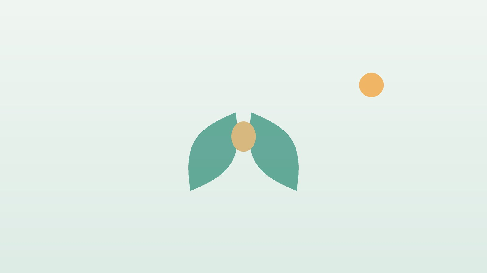

건강 칼럼 · 인천 습관성유산 한의원
유산을 여러 번 겪었다면, 습관성 유산 검사와 임신 준비

이런 경험이 있으신가요?
- 임신 초기에 두 번 이상 유산을 겪었다
- 유산 뒤 원인 검사를 받아 본 적이 없다
- 혈전, 루푸스 같은 자가면역 질환을 진단받은 적이 있다
- 갑상선 수치가 높거나 낮다는 말을 들었다
- 생리 주기가 불규칙하거나 생리량이 매우 적다
- 다음 임신이 두려워 시도를 미루고 있다
이 체크리스트는 진단 도구가 아니라 상담이 필요한지 가늠해 보는 참고용입니다.
왜 반복되고, 어떤 검사를 받아야 하나요?
유산은 생각보다 흔해서, 한 번의 이른 유산은 대부분 태아의 우연한 염색체 이상 때문에 생기며 다음 임신에 큰 영향을 주지 않습니다. 하지만 유산이 반복된다면 엄마나 부부 쪽의 원인이 숨어 있을 수 있습니다. 미국생식의학회(ASRM)와 유럽생식의학회(ESHRE)는 두 번 이상의 임신 손실을 반복 유산으로 보고 원인 평가를 권합니다.
ESHRE 지침에서 권하는 대표 검사는 루푸스 항응고인자, 항카디오리핀항체, 항베타2당단백I 항체로 확인하는 항인지질항체 검사, 갑상선자극호르몬(TSH)과 갑상선 자가항체 같은 갑상선 검사, 3차원 초음파 등으로 자궁 안 모양을 보는 자궁 구조 검사입니다. 상황에 따라 유산된 조직이나 부부의 염색체 검사를 더합니다. 항인지질항체증후군이 확인되면 다음 임신에서 저용량 아스피린과 헤파린 치료를 받게 되는 등 원인에 따라 대처가 달라지므로, 검사를 건너뛰고 다음 임신부터 시도하지 않는 것이 중요합니다. 검사에서 뚜렷한 원인이 나오지 않는 경우도 절반 가까이 되는데, 이때도 다음 임신에서 출산에 이르는 분이 많다고 알려져 있습니다.
임신 중이라면 바로 산부인과로 가야 하는 신호
- 임신 중 질 출혈이 있다, 특히 생리처럼 양이 많거나 덩어리가 나온다
- 아랫배나 한쪽 골반이 갑자기 심하게 아프다 (자궁외임신 확인 필요)
- 어지럽고 쓰러질 것 같으며 어깨 끝이 아프다
- 열이 나고 분비물에서 냄새가 난다
- 한쪽 다리가 붓고 아프거나 숨이 갑자기 찬다 (혈전 의심)
임신 사실을 확인했다면 한의원보다 산부인과 진료를 먼저 받으시고, 이런 신호가 있으면 지체하지 말고 응급 진료를 받으세요.
한의학은 반복되는 유산을 어떻게 보나요?
한의학에서는 유산이 거듭되는 것을 미끄러지듯 태가 빠진다는 뜻에서 활태(滑胎)라 부르고, 한 번의 유산과는 따로 다루어 왔습니다. 태를 품고 지키는 바탕을 신(腎)에, 태를 기르는 재료를 기혈(氣血)에, 태를 붙잡아 두는 힘을 비위의 기운에 두었고, 이 가운데 어느 하나가 약하면 임신을 끝까지 품기 어렵다고 보았습니다.
그래서 전통적으로 활태는 임신 전에 미리 바탕을 다지는 것을 중요하게 여겼습니다. 유산 뒤 충분히 회복하지 못한 채 다시 임신하면 같은 일이 반복되기 쉽다고 보아, 생리 주기와 체력, 수면을 먼저 회복하고 열이 많거나 혈의 흐름이 막힌 경우 이를 조절한 뒤 임신을 시도하도록 했습니다. 이 원칙은 현대의 원인 검사와 함께할 때 더 의미가 있습니다.
나는 어떤 유형일까?
1. 신허(腎虛) 바탕이 약한 유형
- 이런 분에게 많아요
- 35세 이후이거나 유산이 여러 번인 분
- 나타나는 모습
- 생리량이 적고 허리와 무릎이 시큰거린다
- 함께 오는 몸의 신호
- 잦은 소변, 이명, 쉽게 지침
- 진찰에서 보이는 모습
- 혀색이 옅고 맥이 깊이 눌러야 잡히며 약함
- 치료 방향
- 신의 바탕을 북돋는 방향 (육미지황환·우귀음 계열)
- 오늘부터 해 볼 것
- 밤 11시 전에 잠드는 습관부터 들이세요.
2. 기혈허약(氣血虛弱) 채움이 부족한 유형
- 이런 분에게 많아요
- 마르고 빈혈이 있거나 소화가 약한 분
- 나타나는 모습
- 얼굴이 창백하고 조금만 움직여도 숨이 차다
- 함께 오는 몸의 신호
- 어지럼, 두근거림, 손발 저림
- 진찰에서 보이는 모습
- 입술과 혀가 희고 맥에 힘이 없음
- 치료 방향
- 기혈을 채우고 비위를 돕는 방향 (팔진탕 계열)
- 오늘부터 해 볼 것
- 끼니마다 단백질 반찬을 한 가지씩 챙기세요.
3. 혈열(血熱) 열이 많은 유형
- 이런 분에게 많아요
- 몸에 열이 많고 예민한 분
- 나타나는 모습
- 생리 주기가 짧고 생리혈이 선홍색이며 양이 많다
- 함께 오는 몸의 신호
- 입 마름, 얼굴 열감, 변비, 잠들기 어려움
- 진찰에서 보이는 모습
- 혀가 붉고 맥이 빠름
- 치료 방향
- 열을 식히고 음을 기르는 방향 (보음전 계열)
- 오늘부터 해 볼 것
- 매운 음식과 술, 늦은 밤 활동을 줄이세요.
4. 혈어(血瘀) 흐름이 막힌 유형
- 이런 분에게 많아요
- 생리통이 심하거나 근종이 있는 분
- 나타나는 모습
- 생리 때 검붉은 덩어리가 섞이고 아랫배를 바늘로 찌르는 듯하다
- 함께 오는 몸의 신호
- 아랫배 압통, 얼굴빛이 어두움
- 진찰에서 보이는 모습
- 혀가 어둡고 반점이 있음
- 치료 방향
- 임신 전에 막힌 흐름을 풀어 두는 방향 (계지복령환 계열)
- 오늘부터 해 볼 것
- 생리 기록과 함께 산부인과에서 자궁 구조를 확인하세요.
한의원에서는 어떻게 진찰하나요?
- 검사 결과 확인: 항인지질항체, 갑상선, 자궁 구조, 염색체 검사 결과와 산부인과 치료 계획을 확인합니다.
- 유산 경과 문진: 유산 횟수와 시기(몇 주), 회복 기간, 생리 주기의 변화를 여쭙니다.
- 임신 준비 상태: 현재 임신 시도 중인지, 배란일과 시술 일정이 있는지 확인합니다.
- 복진·설진·맥진: 아랫배가 찬지 굳었는지 살피고 혀와 맥을 함께 보아 유형을 나눕니다.
침·약침·한약 치료는 어떻게 하나요?
1. 침 치료 (임신 전 준비 기간)
- 관원(關元): 배꼽에서 손가락 네 마디 아래. 아랫배와 자궁의 바탕을 돕습니다.
- 신수(腎俞): 허리에서 둘째 허리뼈 양옆으로 손가락 두 마디. 신의 기운을 북돋웁니다.
- 족삼리(足三里): 무릎뼈 바깥 아래 움푹한 자리에서 네 손가락 너비만큼 내려간 곳. 기혈과 소화를 돕습니다.
- 태계(太谿): 안쪽 복사뼈 뒤, 발목 힘줄과의 사이에 움푹 들어간 자리. 신을 보하는 혈입니다.
- 백회(百會): 정수리 한가운데. 긴장과 불안을 덜어 줍니다.
임신 중 금기 혈자리: 임신이 확인되었거나 가능성이 있는 시기(배란 이후, 이식 이후)에는 합곡, 삼음교, 그리고 아랫배와 허리·엉치의 혈자리를 자극하지 않습니다. 이 시기에는 꼭 필요한 경우에만 팔과 머리 쪽 혈을 가볍게 씁니다.
2. 약침
임신 전 준비 기간에 허리와 엉치, 아랫배의 관련 경혈에 약침을 적용해 골반 주변의 차가움과 긴장을 줄입니다. 배란 이후나 임신이 확인된 뒤에는 시기를 알려 주시면 피해야 할 부위를 제외하고 자극을 조절해 시행합니다.
3. 한약
유산 뒤 회복기, 임신 준비기로 나누어 유형별 탕약을 처방합니다. 아스피린이나 헤파린, 갑상선 약, 프로게스테론을 쓰고 계신다면 알려 주시면 확인해 처방하며, 혈액 순환에 영향을 줄 수 있는 약재는 특히 신중히 고릅니다. 임신 반응이 나오면 그날 바로 연락 주세요. 복용을 멈추고, 임신 중에 필요한 경우에만 확인 후 안전한 약재로 처방합니다.
원장님이 네이버 블로그에 진료 이야기와 건강 정보를 꾸준히 올리고 있습니다. 더 많은 이야기는 블로그에서 확인해 보세요.
블로그 보기관리는 어떤 순서로 진행되나요?
- 원인 검사 산부인과에서 항인지질항체, 갑상선, 자궁 구조 등 검사를 받습니다.
- 회복기 유산 뒤 몸과 마음을 회복하며 생리 주기가 안정되는지 봅니다.
- 임신 준비기 보통 2~3개월 동안 유형별 침 치료와 약침, 탕약으로 바탕을 다집니다.
- 임신 확인 후 즉시 알려 주시면 한약과 침 치료를 멈추거나 임신에 맞게 바꾸고, 산부인과 진료를 중심으로 합니다.
임신 준비 기간과 치료 간격은 검사 결과와 나이, 시술 일정에 따라 달라지며 진찰 후 개인별로 안내합니다.
다음 임신을 준비하는 생활 관리
- 엽산 복용: 임신 시도 최소 한 달 전부터 엽산을 드세요.
- 담배와 술: 부부 모두 끊는 것이 좋으며, 카페인도 하루 한 잔 이내로 줄입니다.
- 체중: 너무 마르거나 과체중이면 적정 체중에 가깝게 맞춰 봅니다.
- 마음 돌보기: 반복된 상실은 큰 슬픔입니다. 충분히 슬퍼할 시간을 갖고 필요하면 상담을 받으세요.
- 부부 함께: 남편의 생활 습관과 건강도 검사와 준비에 함께 참여하는 것이 좋습니다.
다른 진료가 함께 필요한 경우
- 두 번 이상 유산했다면 산부인과나 난임 전문 병원에서 원인 검사를 먼저 받으세요.
- 항인지질항체증후군이나 혈전 병력이 있다면 임신 전부터 산부인과 계획이 필요합니다.
- 갑상선 수치 이상은 임신 전에 내과 또는 산부인과에서 조절합니다.
- 우울과 불안이 오래간다면 정신건강의학과 상담도 도움이 됩니다.
자주 묻는 질문 Q&A
- Q1. 한약을 먹으면 다음에는 유산하지 않나요?
- 그렇게 약속할 수는 없습니다. 원인 검사와 산부인과 치료가 먼저이고, 한방 치료는 임신 전 몸 상태를 돌보는 데 도움을 드립니다.
- Q2. 유산 후 언제부터 다시 임신을 시도해도 되나요?
- 몸 상태와 검사 결과에 따라 다르므로 산부인과의 의견을 따르세요.
- Q3. 한 번 유산했는데도 검사를 받아야 하나요?
- 한 번의 이른 유산은 대부분 우연한 원인이라 보통 바로 검사하지는 않지만, 걱정되면 상담해 보세요.
- Q4. 임신이 확인됐는데 한약을 계속 먹어도 되나요?
- 임신이 확인되면 바로 복용을 멈추고 알려 주세요. 필요한 경우에만 확인 후 안전한 약재로 처방합니다.
- Q5. 아스피린을 먹는 중인데 침을 맞아도 되나요?
- 맞을 수 있지만 멍이 들기 쉬우니 드시는 약을 꼭 알려 주세요.
- Q6. 검사에서 원인이 안 나왔어요.
- 원인을 찾지 못하는 경우도 많고, 그래도 다음 임신에서 출산하는 분이 많습니다. 생활 관리와 임신 초기 진료를 꾸준히 이어 가세요.
- Q7. 남편도 치료가 필요한가요?
- 염색체 검사나 정액 검사가 필요할 수 있고, 생활 습관 개선은 부부가 함께하는 것이 좋습니다.
- Q8. 임신 초기에 침을 맞아도 되나요?
- 임신 중에는 합곡, 삼음교, 아랫배와 허리 혈자리를 피하며, 꼭 필요한 경우에만 제한적으로 시행합니다.
진료 안내
- 진료시간
- 평일 09:00~20:00 (점심시간 13:00~14:00)
토·일·공휴일 09:00~15:00 - 주소
- 인천광역시 서구 가경주로 46, 2층 (가정동)
인천2호선 가정중앙시장역 인근
영상으로 길 안내 보기 → - 주차
- 한의원 건물 바로 앞 1층 도원주차장
진료시간은 사정에 따라 바뀔 수 있으니 방문 전 전화로 확인해 주세요.
함께 읽으면 좋은 칼럼
건강 칼럼 전체 보기 →


참고 자료
- ESHRE Guideline Group on RPL. ESHRE guideline: recurrent pregnancy loss: an update in 2022. Human Reproduction Open, 2023
- Practice Committee of the American Society for Reproductive Medicine. Definitions of infertility and recurrent pregnancy loss: a committee opinion. Fertility and Sterility, 2020 — 원문
- Practice Committee of the American Society for Reproductive Medicine. Evaluation and treatment of recurrent pregnancy loss: a committee opinion. Fertility and Sterility, 2012
- 질병관리청 국가건강정보포털 — 원문
※ 이 글은 일반적인 건강 정보이며, 개인의 상태에 따라 치료 방법과 결과는 다를 수 있습니다. 정확한 진단과 치료는 진료를 통해 결정됩니다. 침·약침 시술 후 드물게 멍, 통증 등이 생길 수 있습니다.